Settings
Access restricted to users with administrative privileges. We have access to the main settings of ScriptCase.
Access Options > Settings.
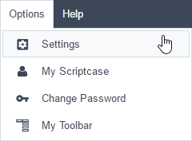
Left side Menu of the Settings page from ScriptCase.
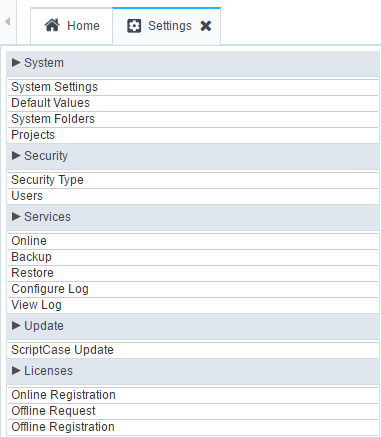
Below we can see some detailed information of each option.
System Settings
Page where you can define various settings that’ll be used by all the users of ScriptCase.
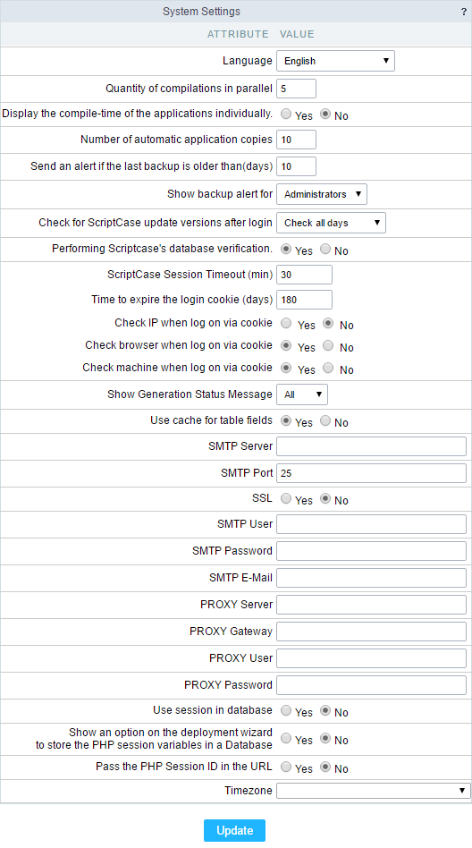
- Language - Defines the default Language for the projects.
- Quantity of compilations in parallel - Defines number of compliers used to generate the applications.
- Display the compile-time of the applications individually - Allows to compile each application individually.
- Number of automatic application copies - Define the amount of copies that application restores module can save.
- Send an alert if the last backup is older than(days) - Define the amount of the days for the system to alert the user that the last backup is becoming obsolete.
- Show backup alert for - Defines the user group that’s going to receive the alert of the back.
- Check for ScriptCase update versions after login - Sets ScriptCase to validate on every login, if there’s a new update released.
- Periodic verification of Scriptcase’s database - Feature the does a periodic backup of ScriptCase’s database (Not the projects).
- Check version every - Allows you to select the day of the week that’ll occur the verification of the new update.
- ScriptCase Session Timeout (min) - Time limit for the execution of the PHP scripts, during the application development, example compile the applications, select analysis, save the applications and etc. (in seconds).
- Show Generation Status Message - Allows you to define the messages of the actions of ScriptCase, when it’s compiling or running your applications, in the options:
- Main - Displays a subgroup of the messages;
- None - Doesn’t display the messages;
- All - Enables the display of all the messages.
- Use cache for table fields - With this feature enabled, makes the applications faster while consulting the data.
To recover the ScriptCase password, available at the login, it’s necessary to setup correctly the options below.
- SMTP Server - You should inform the address of your SMTP server, that’s responsible for your email.
- SMTP Port - Inform the port for the SMTP server. This information is according to the option of secure. Use 465 for SSL and 25 for unsecure connections. Not informing the port, scriptcase will place 25 by default.
- SSL - Define if you’re going to use SSL or not.
- SMTP User - Inform the user for the SMTP server.
- SMTP Password - Inform the password for the SMTP server.
- SMTP E-Mail - Inform the e-mail for the origin of the messages.
- PROXY Server - Inform the IP for the Proxy Server.
- PROXY Gateway - Inform the Gateway of your Proxy Server.
- PROXY User - Inform the Proxy User.
- PROXY Password - Informe a senha do usuário do proxy.
- Use session in database - Allows to use the session in the database.
- Show an option on the deployment wizard to store the PHP session variables in a Database - Allows to display the option to use the session of the deployment in the database.
- Pass the PHP Session ID in the URL - Allows to pass the PHP Session id in the URL.
- Timezone Sets the Timezone to be used in ScriptCase.
Default Values
With this configuration, it’s possible to standardize the creation of the applications of the projects, increasing the productivity in development of the applications. To change the settings only for a project, access from the menu Project > Default Values.
Common Settings
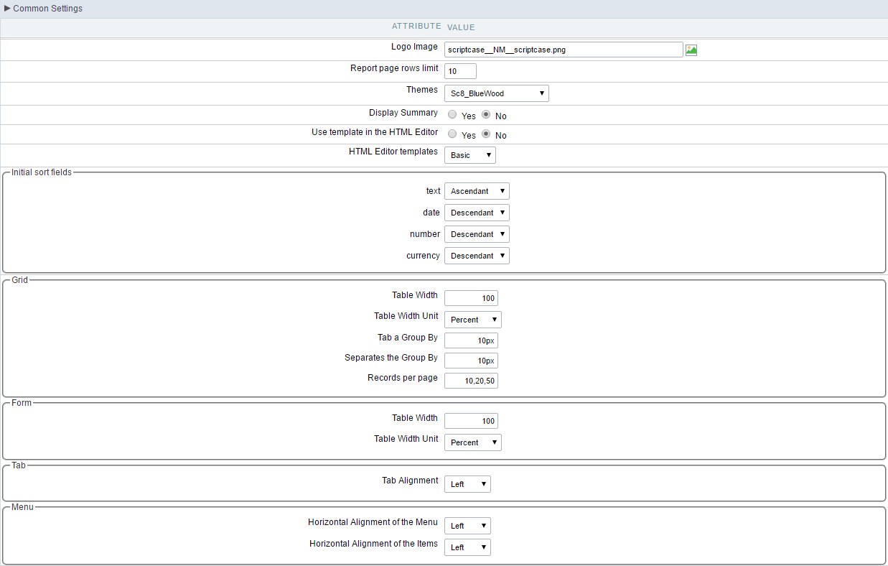
- Logo - The favicon that’s going to use with the project. Customize the project using the same favicon in all the application.
- Records per page - Amount of records per page.
- Theme - Default theme for the projects
- Show Summary - Displays the number of records in the page and the total of the records in the application. This option will execute only if the line option in the Grid toolbar is disabled.
- Use template in the HTML Editor - Selecting Yes, you will be using the new templated of the HTML Editor field, these themes should be setup in Layout > HTML Editor Templates.
- HTML Editor template - Defines the template for editing of the field HTML Editor.
Initial sort fields
- Text - Set the initial sorting for the text fields.
- Date - Set the initial sorting for the date fields.
- Number - Set the initial sorting for the number fields.
- Currency - Set the initial sorting for the currency fields.
Grid
- Table Width - Defines the length for the application table. this option is available to select Pixel or Percent in the table width unit.
- Table Width Unit - The unit used to define the width of the application. Automatic (Width automatically defined according to the size of the fields); Pixel (Width defined by pixels, that should be informed in the form: 800px); Percent (Width defined in percentage, and should be informed in the form: 80%)
- Tab a Group By - Defines the left margin of the Group By.
- Separates the Group - Defines the margin between two Group Bys.
- Lines per page - Defines the option for the user to select and list the amount of records desired by page. If you need an option to list all the records, ads “all” to the options.
Ex.: 10,20,30, all
Form
- Table Width - Defines the length for the application table. this option is available to select Pixel or Percent in the table width unit.
- Table Width Unit - The unit used to define the width of the application. Automatic (Width automatically defined according to the size of the fields); Pixel (Width defined by pixels, that should be informed in the form: 800px); Percent (Width defined in percentage, and should be informed in the form: 80%)
Tab
- Tab Alignment - Display alignment of the tabs in the application.
Menu
- Horizontal Alignment of the Menu - Menu alignment.
- Horizontal Alignment of the Items - Menu item alignment
Template
Defines the templates used by default on the Header and Footer.
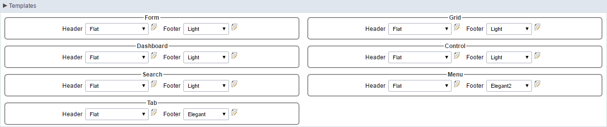
Toolbar Buttons
Define the buttons that’ll be setup by default in the toolbar for the new applications.
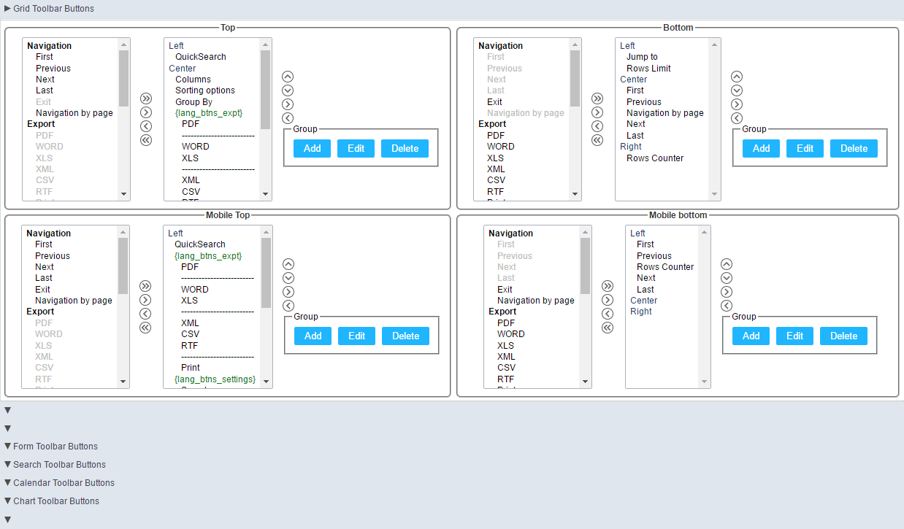
System Directories
Directories where information and models will be stored. All the directories are configured automatically in the automatic installation of ScriptCase and in the manual installation when using the Typical installation method, making unnecessary any modifications from the user. We recommend not changing any of the fields without contacting the support first.
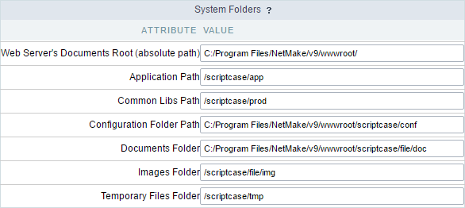
- Root Directory for the Web Server files - Root of the Web Server, where scriptcase is installed. On IIS servers, the default directory would be “inetpub/wwwroot”.
- Application Path - Location where the applications will have stored when created.
- Production Path - Path to where the “prod” directory is located in ScriptCase, in this directory is located all the libraries that the generated applications need to execute.
- Documents Directory - Directory on which the documents used by the applications will be stored.
- Images Directory - Directory on which the images used in the applications will be stored. The images loaded in the applications, using the upload field (Image File Name) will be stored in this directory.
- Temporary Files Directory - Directory where the images manipulated by the application is stored temporary. This temporary storage is a condition the the HTML code requires, so that the images can be opened correctly and the specific directory for these images so that they don’t get mixed up with the images from the gallery.
Security Type
We need to define the method of the access information storage and the type of security used.
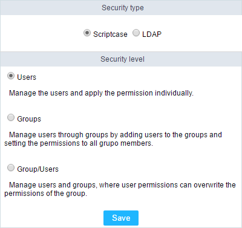
Security Type - Method of data storage. We can select between ScriptCase or LDAP.
- Scriptcase - The access data is stored in the ScriptCase Database.
- LDAP - The access data is stored in the LDAP Server, that scriptcase will check to validate the access.
Security Level - Type of security that’ll be used, this option is the same independently of the storage method.
- User - The permissions are defined for each user. On this option, the permissions need to be configured individually.
- Group - The permissions are defined for the User Groups. On this option, we’ll tie the users to one or more groups, and define the permissions for each group, users that are part of the groups will inherited the permissions.
- User/Groups - On this option, the permissions are defined by the groups and/or individually by the users. This security level, the permissions for the group and the user is added. This way, we can have users existing in the same groups but with different permissions.
The security level option is the same independently of the Security Type. (Scriptcase or LDAP)
Users
User management page of the the system, on it you’ll view a list with all the users registered on the system. We also have other options, like including new users and editing the existing ones.
This option will be available on the left side menu when select it in the Security Type
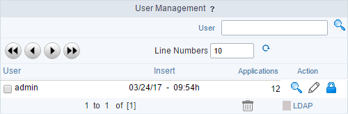
- User - Login of the registered Users.
- Insert - Date and time of the user’s creation.
- Applications - Number of applications for each user.
Action
- Detail - Gives you a detailed view of the user, like it’s email, it’s privileges, projects and groups of users on which it’s part of.
- Edit - You can change the privileges and the projects that it has access.
- Change Password - Change the password for the user.
Below, we’ll specify some options listed above.
New User
When clicking on the button, New User we’ll be redirected to the page to inform the data for user like login, password, privileges and other things.
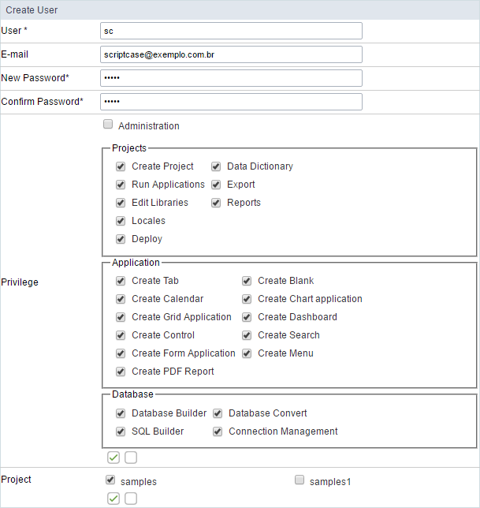
- Users - Inform a login for the user.
- e-mail - Defining the user e-mail.
- New Password - Defining the password for the user.
- Confirm Password - Confirming the password that’s being registered.
Privileges
- Administration - Permission for the user to access the administrative area of ScriptCase.
- Projects - Actions that user can do when accessing a project.
- Application - Permission to create applications.
- Database - Actions that user can do with the database configurations in the projects it has access to.
- Project - Projects that the user has access.
Next, we’ll be redirected to a page where you can select which projects will managed by the user. In the example below, I’m defining the user sc as the administrator of the project gradebook.
The project administrator, can change various preferences of the project, existing connections.
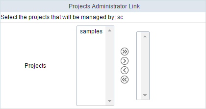
Editing a User
The editing page is similar to the creation of the users, having the same options of configurations.
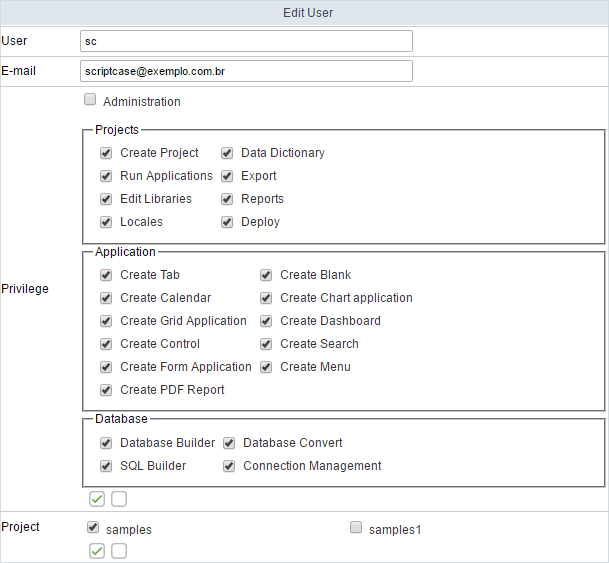
- Users - Users login.
- e-mail - The e-mail registered for the user.
Privileges
- Administration - Permission for the user to access the administrative area of ScriptCase.
- Projects - Actions that user can do when accessing a project.
- Application - Permission to create applications.
- Database - Actions that user can do with the database configurations in the projects it has access to.
- Project - Projects that the user has access.
Like the procedure for creating a user, we’ll be redirected to a page where you can select which projects will managed by the user. In the example below, I’m defining the user sc as the administrator of the project documents_library.
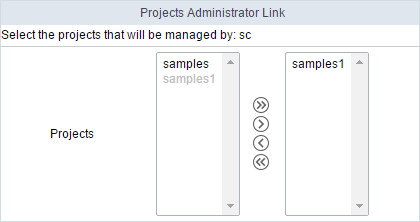
Changing the Password
On this page, you need to inform the new password for the user.
Delete Users
We can delete more than one user at the same time
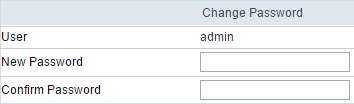
When deleting a user that has applications linked to its login, you need to inform if you want to delete the applications or if you want to move them to another user.
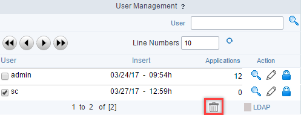
- Delete Application - All the applications created by the user will be deleted.
- Move Application - All the applications will be moved to the user informed.
Groups
Managing user groups. You’ll see a list of the existing groups and some information about them.
This option will only be available on the left side menu when we select the Groups option in the Security Type
- Name - Name of the groups.
- Description - Group Description.
- Users - Users that are part of this group.
- Projects - Projects that the users of this group have access to.
Actions
- Users - Defines the users that’ll be part of this group.
- Edit - Edits the group.
- Delete - Delete the group.
You’ll see more details below about the existing options.
New Group
Creating the groups, we can define the privileges.
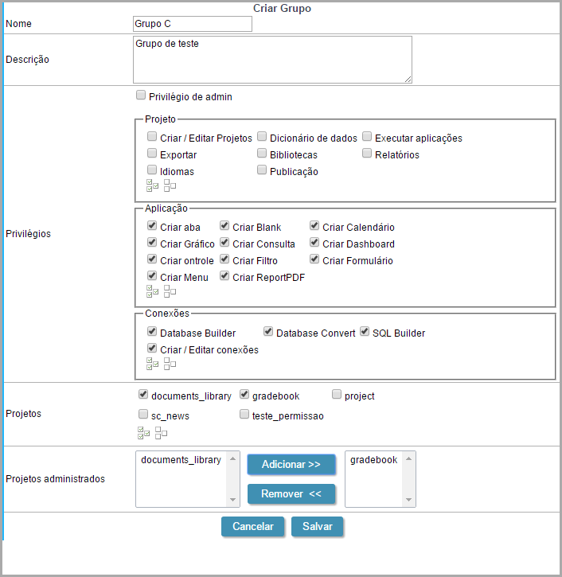
- Name - Name of the group.
- Description - Group Description.
- Admin Privilege - Defines if the users that are in the group, will have Administrator Privileges for ScriptCase.
Privileges
- Project - Defines if the users from this group will have access to do some actions in the projects.
- Application - Defines the permission to create applications (By type).
-
Connections - Defines the privileges to the options of the database of the project.
- Projects - Defines the projects that’ll be accessed by the group.
- Admin projects - Defines if the group will have Administrator Permission for the project. On this Example, the users from the Group C will be Administrators of the the gradbook project.
Users
After creating the group, we can define which users will be part of the group.
LDAP
Page where you will sync with LDAP. We recommend using the LDAP Administrator user, this way, all the group users of the server will be listed. So, that you can connect with LDAP in ScriptCase and have the LDAP privileges in ScriptCase.
This option will be available on the left side menu, if you selected the LDAP option in Security Type
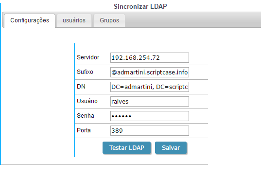
- Server - IP of the LDAP server (Needs to be setup before proceeding).
- Suffix - Domain of the server.
- DN - Domain Component.
- User - Administrator of the Server.
- Password - Senho do usuário informado.
- Port - Server Port.
After saving the LDAP server connection, the users and groups listed in the Users and Groups tabs according to the server. Initially, only the administrator user (The same used for the LDAP connection) will have access to ScriptCase. The other users need to be enabled and their permission needs to be setup also with the groups.
Users
This option is displayed when selecting users in the Security Level, lists all the users from the LDAP server. We can manage the privileges of each user with the projects and options of ScriptCase.
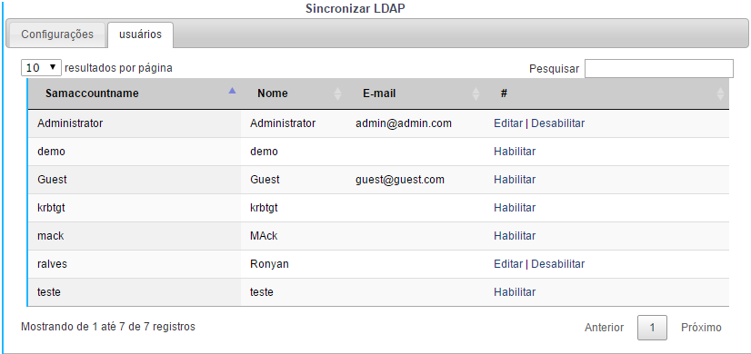
Groups
Option displayed when selecting the group option in the Security Level, lists all the groups from the LDAP server. You need to access this tab to enable the groups and set their privileges.
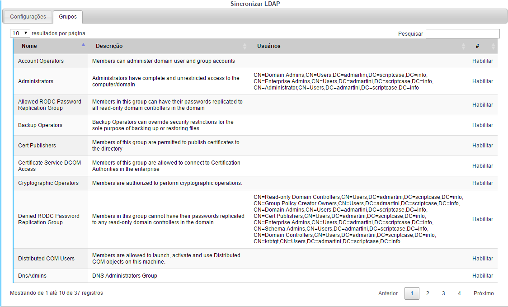
User / Groups
When selecting a security level of User/Groups, two tabs will be displayed. In this case, the permissions are defined for the group of users and/or individually by user. On this type of security, the permissions of the group and the user are added. So, that can user exist in a group and have different users.
Projects
List of Scriptcase existing projects. You can view all projects details, such as users who have access, the current version of projects, number of applications, among other information.
======= 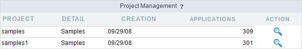
- Project - Project name.
- Description - Project description.
- Creation - Project creation date
- Applications - Number of applications from each project version.
1:33(Versions count: number of applications) - Action - Project details.
By clicking on the magnifying glass next to the number of applications, you can see more details of the project. In addition to some information previously views on the list of projects.
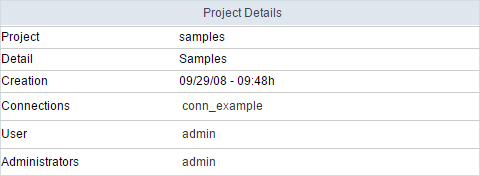
- Connections - Lists of connections of the project.
- User - Users that have access to the project. The users will have the basic permissions, like create applications.
- Administrators - User/Groups that are administrators of the project. It’s possible to create and edit connections in the properties of the project, with this permission.
The permission of each user needs to be setup individually as the group permission also needs to be.
Backup
ScriptCase’s backup works in a similar way as the project export, but the backup does an export of all the applications from ScriptCase, with all the files necessary for them to work. To do a backup, just inform the name of the file to be generated.
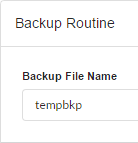
Fianlly, download the generated file and save it in a secure location.
Restore
This option is similar to Project Import, however using the restore you can import more than one project at a time. When you access the restore you will see a list of backups performed recently, you will be able to restore these backups or to import a backup exported from other Scriptcase installation.
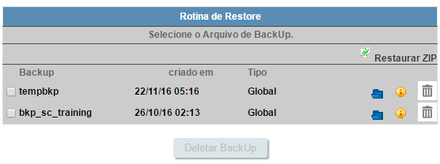
- Backup - Backup generated files.
- Created in - Creation date and time of the listed backups.
- Restore - Backup restore.
- Detail - Backup details.
- Delete - Deletes the backup permanently.
To restore another backup, which is not in the list above, select zip restore and upload a backup file created by Scriptcase.
After choosing the backup that is going to be restored you will be redirected to a confirmation page. At this moment, you must inform you if we want to overwrite duplicate files or keep the existing files in Scriptcase.
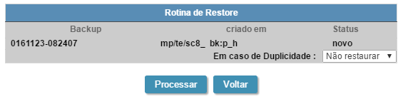
Log Settings
ScriptCase maintains in its database a log of the main actions done by the users. By default, all the actions are stored in our database. On this option, we can customize the log registry, by marking and unmarking the actions that should be stored.
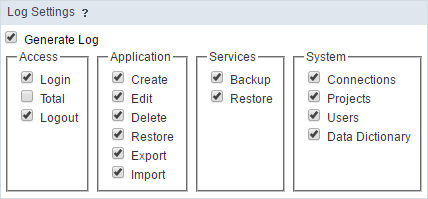
View Log
This option allows you to view the main actions done by the users, being stored separately by day. On the calendar, we can select the desired date to view the information on the table on the side. The days that have log, have a blueish background color.
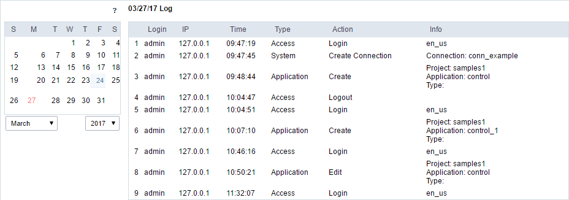
- Login - Login of the user responsible for the action.
- IP - IP of the work station that the user did the actions described.
- Time - Time when the action was done.
- Type - The type of action done.
- Action - What action was done.
- Info - Details of the action;
Scriptcase Update
ScriptCase update area. All the update process is done by the internet, using our servers. We recommend using a fast connection.
Firstly, we will verify if the there is a new version of ScriptCase available.
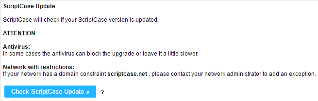
We can later define if the offline documentation and the prod used by ScriptCase are updated.
Next, we can visualize the total of updates found.
After started the update, the process can’t be interrupted.
After downloading and updating all the files, you’ll view a screen with the option to view log of modifications done in the process: Click here to view ScriptCase update log.
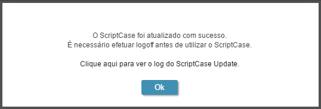
If you’re having problems connecting to our server, check if your firewall is allowing the connections to the links: .scriptcase.com.br__; __.scriptcase.net;
Online registration
For the online registration, you must be connected to the internet. There will be an online communication between your server and Scriptcase servers. We are going to validate the information that you enter and send you back the confirmation online. It’s quick and simple.
In order to register your Scriptcase you essentially need to have the account owner information (user, password and serial key). This information is created during the license purchase.
Enter your account details (User login, password and serial key).
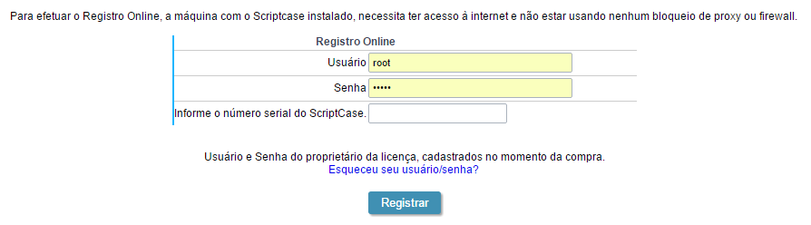
- User - Account user login linked to serial (License owner details, same information used to access My Scriptcase options under the website)
- Password - Account password
- Serial - Active and available for registration (open) serial key.
To complete the register, you will need to log out of Scriptcase.
Offline Registration
Used for cases where the machine where Scriptcase is installed does not have internet access. The offline registration is done in two steps: Request (request the registration file) and Register (register the file).
In order to register your Scriptcase you essentially need to have the account owner information (user, password and serial key). This information is created during the license purchase.
Request
You can access the Request option under the menu License > Offline Request
Inside this option you request a encrypted file containing relevant information to Scriptcase registry (.req file).
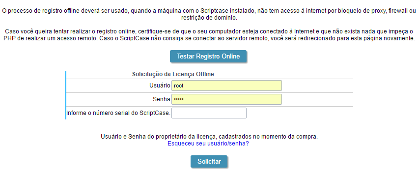
- User - Account user login linked to serial (License owner details, same information used to access My Scriptcase options under the website)
- Password - Account password
- Serial - Active and available for registration (open) serial key.
After completing the request, you need to access the website through the link https://www.scriptcase.net/licenserequest/ to upload the file and get the registry file
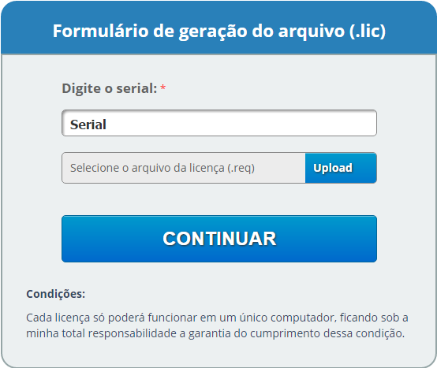
Enter the serial you want to use for the registry and upload the file .rec delivered by Scriptcase during the file request step. You will receive another file called: .lic, download this file and go back to Scriptcase registration step.
Registration
Back to Scriptcase, please access: Licenses > Offline Registration.
Reenter the account information and the serial key, upload the .lic downloaded from the website.
- User - Same login used to generate the file
.rec(License owner details, same information used to access My Scriptcase options under the website) - Password - Account password
- Serial - Active and available for registration (open) serial key.
- Upload - Upload the file
.licdownloaded from the website.
To complete the register you will need to log out of Scriptcase.